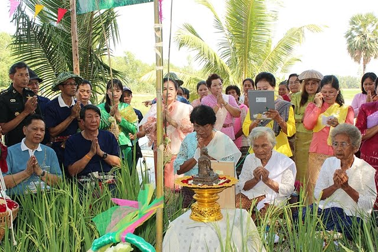
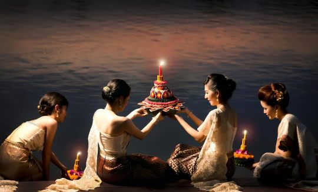
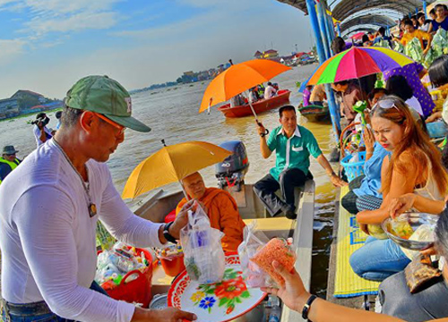
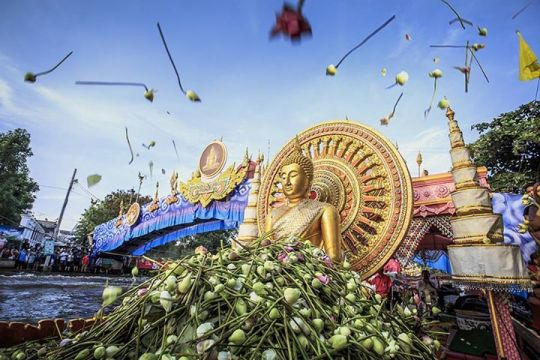
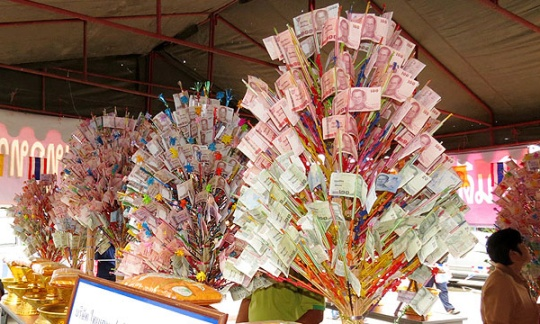

| ความเชื่อเรื่องแม่โพสพ |
|---|
คนไทยมีความเชื่อดั้งเดิมเรื่องผีสางเทวดา ชีวิตประจำวันที่ผูกพันอยู่กับอาชีพชาวนา ชาวนาจึงเชื่อว่า ในข้าวมีวิญญาณแม่โพสพ ซึ่งมีบุญคุณต่อชาวนาสิงอยู่ จึงมีการ ปฏิบัติพิธีกรรมเพื่อระลึกถึงแม่โพสพ เช่นการสร้างศาลเพียงตาใน ทุ่งนา เรียกว่า “เรือนแม่โพสพ” มีการทำขวัญข้าวเมื่อข้าวเริ่มออก รวง หรือที่เรียกว่า”ข้าวตั้งท้อง” และนำข้าวอ่อนไปทำบุญถวายพระ ในประเพณีสารทเดือนสิบ ซึ่งมีการกวนข้าวทิพย์หรือข้าวมธุปายาส เมื่อมีการเก็บเกี่ยวข้าวแล้ว ก่อนจะนำข้าวเก็บยุ้งฉาง จะมีพิธีบอก กล่าวแม่โพสพ นอกจากนี้ยังมีความเชื่อว่าข้าวเป็นสิ่งที่มีบุญคุณต่อ ชีวิตมนุษย์ จึงได้รับการยกย่องโดยมีคำเรียกช่วงเวลาในสมัยโบราณ เมื่อข้าวตั้งท้องว่า “ตะวันอ้อมข้าว” แสดงให้เห็นความสำคัญของ ข้าวว่า เมื่อตั้งท้องแม้แต่พระอาทิตย์ยังต้องอ้อมข้าว เหมือนที่การ ปฏิบัติกันจนทุกวันนี้ คือ ไม่เหยียบข้าว ไม่ทิ้งข้าว เพราะถือว่าเป็น บาปกรรม |
|  |
| ประเพณีลอยกระทง |
ตรงกับวันขึ้น ๑๕ ค่ำ เดือน ๑๒ ของทุกปี หรือที่เรียกกันติดปากว่า “วันเพ็ญเดือน ๑๒” นั่นเอง ซึ่งเป็นวันที่พระจันทร์เต็มดวง และเป็นช่วงที่น้ำหลากเต็มตลิ่ง แต่เดิมเรียกประเพณีลอยกระทงว่า พระราชพิธีจองเปรียงชักโคม ซึ่งเป็นพิธีของพราหมณ์ ประเพณีลอยกระทงของไทย มีมาตั้งแต่สมัยสุโขทัย เรียกว่า การลอยพระประทีป หรือลอยโคม ประเพณีลอยกระทงนี้กระทำขึ้นเพื่อเป็นการสะเดาะเคราะห์และขอขมาต่อพระแม่คงคา ปัจจุบันประเพณีลอยกระทงของไทยถูกจัดขึ้นในทุกพื้นที่ทั่วประเทศ โดยเฉพาะอย่างยิ่งบริเวณที่ติดกับแหล่งน้ำ ในวันลอยกระทง ประชาชนจะพากันประดิษฐ์ “กระทง” จากวัสดุที่เป็นมิตรกับสิ่งแวดล้อมต่างๆ เช่น ก้านกล้วย ดอกไม้ ใบไม้ ให้เป็นรูปทรงคล้ายดอกบัวบาน แต่ปัจจุบันมีการประดิษฐ์กระทงหลายรูปแบบมาก โดยส่วนใหญ่จะเน้นรูปทรงที่สวยงาม เมื่อประดิษฐ์กระทงเสร็จแล้วก็จะทำการปักธูป เทียน ชาวบ้านบางแห่งจะนิยมตัดเล็บ ตัดผม หรือใส่เงินลงไปในกระทงด้วย แล้วนำไปลอยในแหล่งน้ำ (ในบริเวณพื้นที่ติดทะเล ก็นิยมลอยกระทงริมฝั่งทะเลด้วยเช่นกัน) เชื่อว่าการทำแบบนี้จะเป็นการลอยเคราะห์ไป นอกจากนี้ยังมีความเชื่อว่าการลอยกระทง เป็นการบูชาพร้อมทั้งขอขมาพระแม่คงคาอีกด้วย |
|  |
| ประเพณีตักบาตรพระร้อย |
คือ การทำบุญตักบาตรประจำปีของวัดไทยเจริญ จังหวัดนนทบุรี“เมื่อครั้งสมัยโบราณกาล วัดไทยเจริญยังไม่มีพระพุทธรูป เจ้าอาวาสจึงได้บอกบุญให้ชาวบ้านนำทองเหลืองมาบริจาคเพื่อหล่อเป็นองค์พระ เมื่อได้แผ่นทองเหลืองแล้วก็นิมนต์พระเกจิอาจารย์ จำนวน ๑๐๘ รูป สวดปลุกเสกและจารึกอักขระอาคมลงในแผ่นทองเหลือง แล้วจึงนำแผ่นทองเหลืองนั้นมาหลอมเป็นองค์พระ และตั้งชื่อว่า “พระพุทธอาคม” ครั้นพระพุทธอาคมได้สร้างเสร็จซึ่งตรงกับวันแรม ๘ ค่ำ เดือน ๑๒ พ.ศ. ๒๔๖๖ ทางวัดและชาวบ้านจึงได้จัดงานฉลองและทำบุญตักบาตร เรียกว่า วันทำบุญตักบาตรพระร้อยแปด เหตุผลที่เรียกว่าวันทำบุญตักบาตรพระร้อยแปด ก็เนื่องมาจากจำนวนพระเกจิอาจารย์ทั้ง ๑๐๘ องค์ ที่มาปลุกเสกและจารึกอักขระอาคมลงในแผ่นทองเหลือง พิธีกรรมของการทำบุญตักบาตรพระร้อยนี้จะเริ่มตั้งแต่วันแรม ๗ ค่ำ เดือน ๑๒ โดยมีการแห่หลวงพ่อพุทธอาคมไปตามลำคลองหน้าวัดไทยเจริญ และนำกลับมาให้ประชาชนได้นมัสการปิดทองที่วัด ส่วนในวันแรม ๘ ค่ะ เดือน ๑๒ ก็จะมีการทำบุญตักบาตร |
|  |
| ประเพณีประเพณีรับบัว |
ประเพณีประเพณีรับบัวเป็นประเพณีเก่าแก่ของชาวอำเภอบางพลี จังหวัดสมุทรปราการ จัดขึ้นทุกวันขึ้น ๑๓ ค่ำ เดือน ๑๑ ถึงวันขึ้น ๑๕ ค่ำ เดือน ๑๑ มูลเหตุของการเกิดประเพณีรับบัวก็เนื่องมาจากว่า แต่เดิมในอำเภอบางพลีจะมีประชากรอาศัยอยู่ ๓ กลุ่มคือ คนไทย คนรามัญ และคนลาว ต่อมาคนไทยทั้ง ๓ กลุ่ม ได้ตกลงกันว่าจะช่วยกันถากถางพงหญ้าให้เป็นพื้นที่ทำไร่ทำนา จนกระทั่งคนไทยทั้ง ๓ กลุ่มได้ถางหญ้ามาถึง ๓ แยก ทุกคนตกลงกันว่าจะแยกไปคนละทาง โดยคนลาวไปทางคลองสลุด คนไทยไปทางคลองชวดลากหญ้า คนรามัญไปทางคลองลาดกระบัง ๒-๓ ปีต่อมา กลุ่มรามัญที่ย้ายไปอยู่ทางคลองลาดกระบังโดยหนูและนกทำลายพืชผลทางการเกษตรจึงต้องย้ายกลับมาอยู่ถิ่นฐานเดิมคือที่ปากลัด (พระประแดง) โดยเริมออกเดินทางในตอนเช้ามืดของวันขึ้น ๑๕ ค่ำ เดือน ๑๑ แต่ก่อนออกเดินทางพวกรามัญได้เก็บดอกบัวเพื่อนำไปบูชาพระคาถาพัน (เทศน์มหาชาติ) ที่ปากลัด และได้สั่งเสียพวกคนไทยบางคนที่ยังคงอาศัยอยู่ ณ คลองลาดกระบัง ว่าในปีต่อไปถ้าถึงวันขึ้น ๑๕ ค่ำ เดือน ๑๑ ให้ช่วยเก็บดอกบัวและรวบรวมไว้ที่วัดหลวงพ่อโตแล้วพวกตนจะมารับ ครั้นถึงวันขึ้น ๑๕ ค่ำ เดือน ๑๑ คนไทยก็ได้เก็บดอกบัวและไปรวมไว้ที่วัดบางพลีใหญ่หรือวัดหลวงพ่อโตตามคำร้องขอของชาวรามัญ การมาของชาวรามัญจะมาโดยเรือถึงประมาณตี ๓-๔ และทุกครั้งที่มาจะมีการร้องเพลงกันอย่างสนุกสนานส่วนผู้ที่มาคอยรับก็พลอยสนุกสนานไปด้วย “พิธีกรรมของประเพณีรับบัวจะเริ่มต้นในวันขึ้น ๑๓ ค่ำ เดือน ๑๑ โดยในตอนเย็นชาวพระประแดงและเพื่อนบ้านใกล้เคียง จะลงเรือและร่องไปตามแม่น้ำเจ้าพระยาบ้าง ตามคลองสำโรงบ้าง แต่ทุกคนจะมีจุดหมายเดียวกันคือไปที่หมู่บ้านบางพลี โดยในเรือที่ร่องกันมานั่นจะมีเครื่องดนตรีนานาชนิด เช่น ปี่ ซอ แง แบ กรับ และกลอง เป็นต้น และทุกคนจะร้องรำทำเพลงกันอย่างสนุกสนาน ส่วนชาวบางพลีก็จะเตรียมดอกบัวและอาหารไว้ต้อนรับแขกผู้มาเยือน” |
|  |
| ประเพณีทอดกฐิน |
ประเพณีทอดกฐินจะทำในช่วงวันแรม ๑ ค่ำ เดือน เกี๋ยงเหนือหรือเดือนตุลาคม ถึงวันขึ้น ๑๕ ค่ำ เดือนยี่เหนือ หรือเดือนพฤศจิกายน สมัยโบราณชาวล้านนาไม่นิยมทอดกฐินเนื่องจากว่าจะต้องใช้ปัจจัย (เงิน) ค่อนข้างมาก ผู้ที่จะถวายกฐินได้จะต้องมีฐานะดีและมีความตั้งใจจริง เมื่อผู้ใดมีความประสงค์จะถวายกฐิน จะต้องจองกฐินที่วัด และบอกแก่ชาวบ้านให้ทราบโดยทั่วกัน เมื่อถึงวันทอดกฐินก็จะมีการแห่กฐินมาทอดที่วัด และในบางวัดจะมีมหรสพในตอนกลางคืนด้วย |
|  |
| ประเพณีตักบาตรดอกไม้ จังหวัดสระบุรี |
“น้อมนมัสการรอยพระพุทธบาท ร่วมทำบุญตักบาตรตามวิถีปฏิบัติ ในงานประเพณีตักบาตรดอกไม้ เนื่องในเทศกาลวันเข้าพรรษา ตลอดช่วงเช้าและช่วงบ่ายพระสงหลายร้อยรูป บิณฑบาตเหล่าดอกเข้าพรรษาสีเหลือง ขาว และน้ำเงินม่วง ซึ่งจะเบ่งบานในช่วงวันเข้าพรรษา ที่พุทธศาสนิกชนหลายหมื่นแสนต่างพร้อมใจนำมาถวายด้วยศรัทธาอันแรงกล้า เรื่อยมาจวบจนปัจจุบัน” ดอกเข้าพรรษากำลังเบ่งบานอยู่รายรอบภูเขา บริเวณใกล้กับวัดพระพุทธบาทราชวรมหาวิหาร นับเป็นสัญญาณที่บอกให้ทราบว่าใกล้ถึงช่วงวันเข้าพรรษา แรม ๑ ค่ำ เดือน ๘ แล้ว ซึ่งนับว่าเป็นวาระมงคลที่พุทธศาสนิกชน จะมาพร้อมกันเพื่อถวายดอกเข้าพรรษาแก่พระภิกษุสงฆ์ เพื่อนำไปสักการะแด่พระเจดีย์จุฬามณี ตามความเชื่อดั้งเดิม |
 |
| ประเพณีตักบาตรเทโวโรหณะ จังหวัดอุทัยธานี |
“เทโวโรหณะ วิถีแห่งศรัทธาต่อศรัทธา” “ขึ้นแรม ๑ ค่ำ เดือน ๑๑ ถึงกำหนดเวียนมาบรรจบ ณ วัดสังกัตรัตนคีรี ประเพณีตักบาตรเทโว พระสงฆ์หลายร้อยรูปเดินลงจากยอดเขา ผ่านบันได ๔๔๙ ขั้นสู่เบื้องล่าง ที่ยังเนืองแน่นไปด้วยพุทธศาสนิกชนเรือนหมื่น ที่ยังคงยึดมั่นในวิถีปฏิบัติดั้งเดิม อันสะท้อนภาพแรงศรัทธาที่สุกสว่าง ภายในจิตใจของทุกคน” อุทัยธานี ชุมชนลุ่มแม่น้ำสะแกกรัง เมืองเล็กๆ ที่อบอุ่น และมากด้วยไมตรีจิต ที่พร้อมมอบให้แก่คนต่างถิ่น และรอให้เข้ามาสัมผัส วัฒนธรรม ประเพณีไทยที่ยังคงเอกลักษณ์ และห่างไกลสิ่งเจือปนจากภายนอก บางคนมักจะละเลยผ่านไป แต่ลองหยุดแวะพัก ค่อยๆ ปล่อยชีวิตให้เดินช้าลง คุณจะหลงรักเมืองแห่งนี้ได้ไม่ยาก ณ บริเวณศูนย์กลางของเมือง ยอดเขาสะแกกรังยังคงเป็นสถานที่ศักสิทธิ์ ที่มีความเชื่อมาแต่โบราณกาลว่าเป็นที่ตั้งของซากโบราณสถาน ซึ่งเมื่อปี พ.ศ.๒๔๔๐ พระปลัดใจ เจ้าอาวาสวัดทุ่งแก้ว และชาวอุทัยธานีได้ลงแรงช่วยกันสร้างมณฑปสิริมหามายากุฎาคาร พร้อมก่อสร้างวัดสังกัตรัตนคีรีมงคลประไพอุทัยเขตร์ขึ้น จนกลายเป็นศูนย์รวมศรัทธาของพุทธศาสนิกชน ชาวอุทัยธานีและชาวไทยเรื่อยมา |
 |
 |
 |
 |